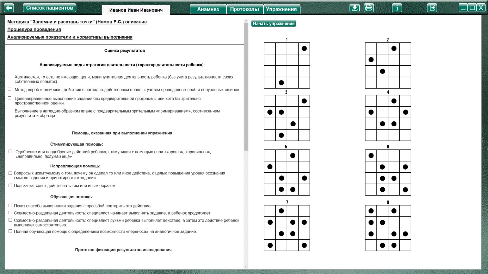
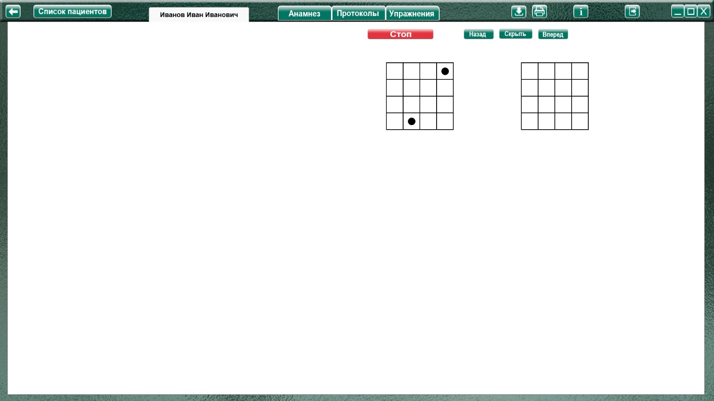
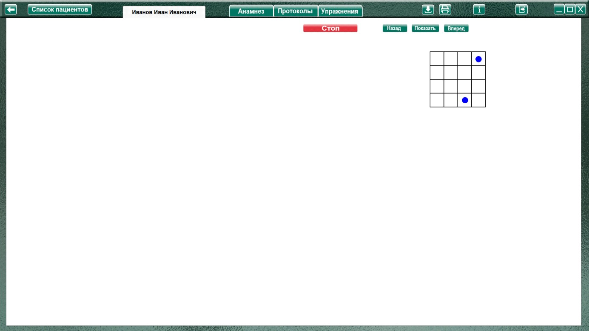
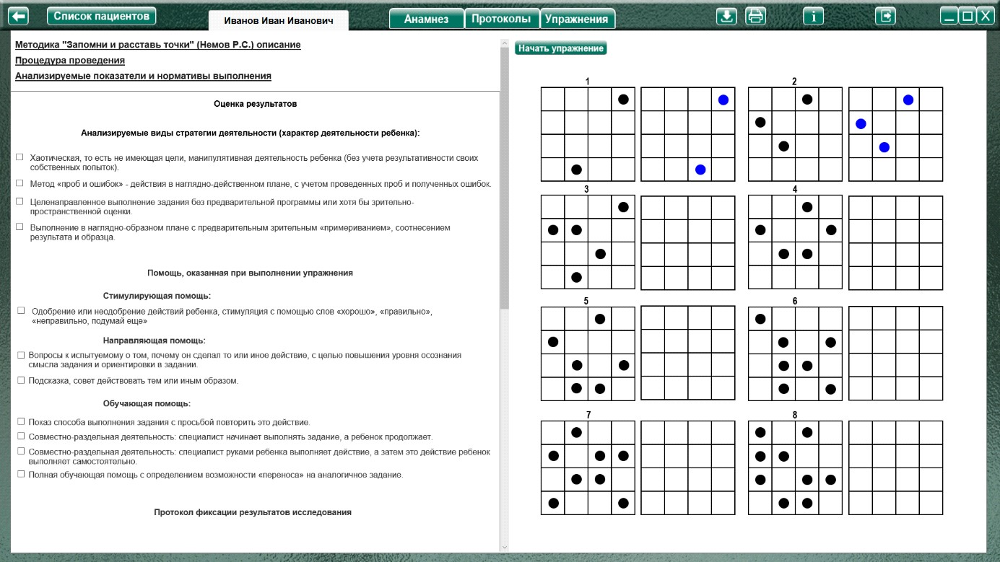

Методика "Запомни и расставь точки" (Немов Р.С.)
Методика "Запомни и расставь точки" (Немов Р.С.) описание
Процедура проведения.
Перед началом эксперимента ребенок получает следующую инструкцию:
«Сейчас мы поиграем с тобой в игру на внимание. Я буду тебе одну за другой показывать карточки, на которых нарисованы точки, а потом ты сам будешь рисовать эти точки в пустых
клеточках в тех местах, где ты видел эти точки на карточках».
Далее ребенку последовательно, на 1-2 сек, показывается каждая из восьми карточек с точками сверху вниз в стопке по очереди и после каждой очередной карточки предлагается воспроизвести увиденные точки в пустой карточке за 15 сек.
Это время дается ребенку для того, чтобы он смог вспомнить, где находились увиденные точки, и отметить их в пустой карточке.
Анализируемые показатели и нормативы выполнения
Объемом внимания ребенка считается максимальное число точек, которое ребенок смог правильно воспроизвести на любой из карточек (выбирается та из карточек, на которой было воспроизведено безошибочно самое большое количество точек). Результаты эксперимента оцениваются в баллах следующим образом:
10 баллов — ребенок правильно за отведенное время воспроизвел на карточке 6 и более точек.
8-9 баллов — ребенок безошибочно воспроизвел на карточке от 4 до 5 точек.
6-7 баллов — ребенок правильно восстановил по памяти от 3 до 4 точек.
4-5 баллов — ребенок правильно воспроизвел от 2 до 3 точек.
0-3 балла — ребенок смог правильно воспроизвести на одной карточке не более одной точки.
Выводы об уровне развития
10 баллов — очень высокий.
8-9 баллов — высокий.
6-7 баллов — средний.
4-5 баллов — низкий.
0-3 балла — очень низкий.
Оценка результатов
Характер деятельности ребенка:
Виды возможной помощи:
Стимулирующая помощь
Направляющая помощь:
Обучающая помощь:
Протокол фиксации результатов исследования
_________________________________ _______________
ФИО Дата рождения
Методика |
Запомни и расставь точки |
Автор методики (адаптации, модификации) |
Немов Р.С. |
Цель: |
оценка объема внимания ребенка. |
Дата / специалист |
|
Результат: баллы (макс.) / вывод об уровне развития |
|
Примечание |
|
Процесс выполнения диагностической методики |
|
Характер деятельности ребенка |
Виды помощи |
Баллы |
Логика заполнения протокола
Заполняется автоматически
Имя специалиста – логин при входе в программу.
Дата – дата и время прохождения упражнения в формате дд.мм.гггг. чч:мм
Ячейки «Характер деятельности ребенка», «Виды помощи» заполняются в зависимости от выбора специалиста в поле «Оценка результатов» либо самостоятельно.
Результат: баллы (макс.) / - из ячейки баллы (макс. 10)
вывод об уровне развития - согласно данным:
10 баллов — очень высокий.
8-9 баллов — высокий.
6-7 баллов — средний.
4-5 баллов — низкий.
0-3 балла — очень низкий.
Остальные ячейки заполняются (правятся) специалистом самостоятельно.
Описание элементов управления
Кнопка «Показать/Скрыть» - показать / скрыть демонстрируемую таблицу с точками.
 Кнопка «Вперед» - показать следующую таблицу с точками.
Кнопка «Вперед» - показать следующую таблицу с точками.
Выполнение упражнения.

После ознакомления ребенка с заданием (согласно пункту «Процедура проведения») нажать кнопку «Начать упражнение» (включая секундомер, закрывая область оценки результата и открывая задание на весь экран).

Выполнить задание согласно пункту «Процедура проведения». Через заданное время скрыть демонстрируемую таблицу с точками, нажав кнопку «Скрыть». (при этом запускается таймер, который обнуляется при нажатии кнопки «Вперед»). Выполнить задание можно при помощи мышки, наведя курсор на нужную ячейку пустой таблицы, и нажав левую кнопку поставить точку. Нажатие правой кнопки мыши удалит поставленную точку.

После того, как ребенок расставит точки, нажать кнопку «Вперед» для показа следующей таблицы. По окончании выполнения задания нажать кнопку «Стоп» для открытия поля оценки результата.

При необходимости выбрать характер деятельности, виды помощи, и нажать кнопку «Сформировать протокол». Произвести оценку результата (заполнить оставшиеся ячейки протокола) согласно пункту «Анализируемые показатели и нормативы выполнения».
При выполнении задания на пк, в правой части экрана отобразиться задание (при «выделении» строчки протокола с баллами), выполненное ребенком.
Так же можно распечатать стимульный материал при помощи кнопки «Печать» и выполнить задание на бумаге. При выполнении задания на бумаге, можно отсканировать выполненное упражнение, и сохранить его в упражнении. В дальнейшем, при просмотре протокола на странице протоколов в строке «Дата / специалист» будет надпись: «Показать изображение», при клике по которой можно будет увидеть сохраненное изображение. Для сохранения нужно сохранить отсканированное изображение в любую папку на пк. На странице упражнения «Запомни и расставь точки» нажать кнопку «Загрузить файл», найти и сохранить рисунок.